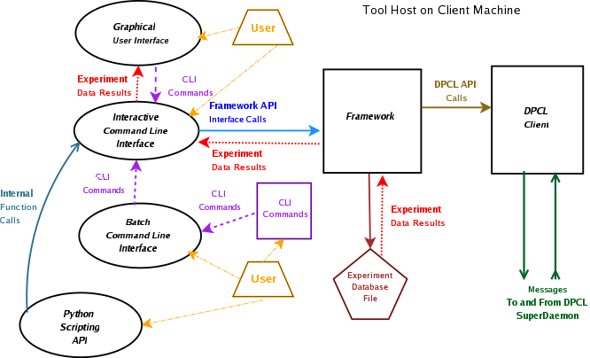
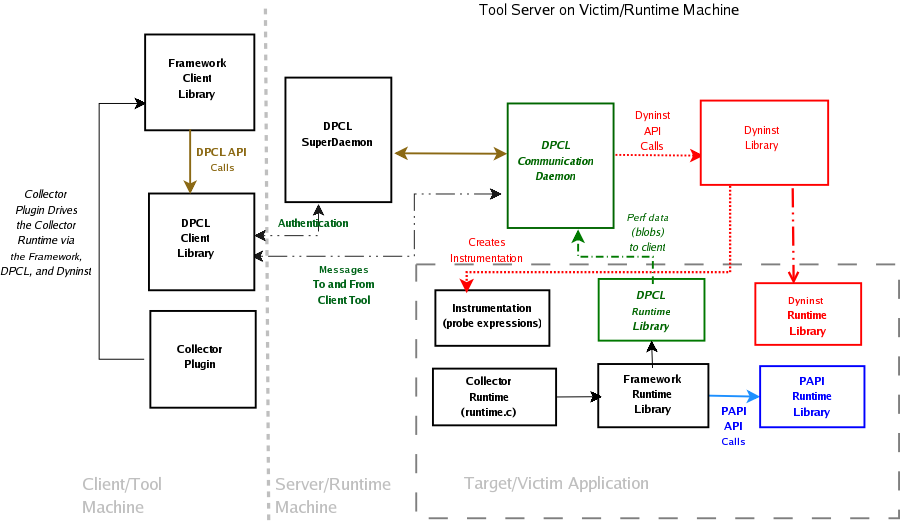
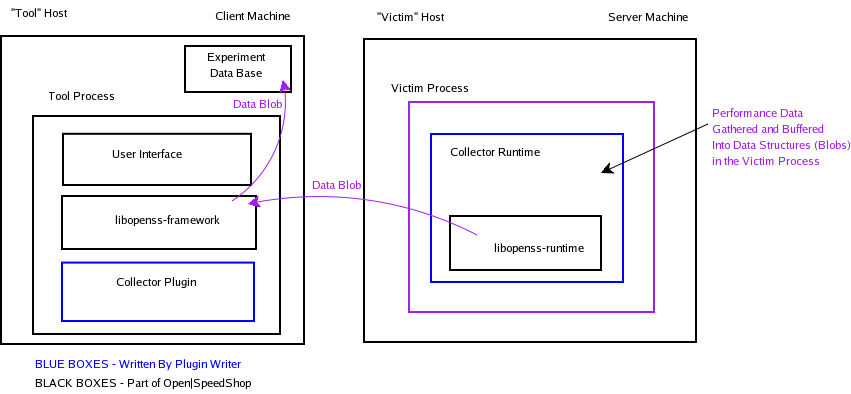
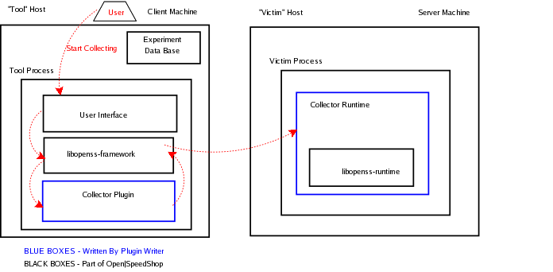

Plugin Creation Guide
Version 2.0.2 Release
November 9, 2012
(NOTE: concepts are still valid but some diagrams need
updating)
Table of
Contents
Open|SpeedShop Overview and Information
Resources
Open|SpeedShop is a project co-funded by the Department of Energy
(DOE), managed by the Tri-laboratories of LLNL, LANL, and Sandia,
and developed by SGI. Open|SpeedShop utilizes dynamic
instrumentation technology developed at the Universities of
Wisconsin and Maryland.
Open|SpeedShop is an open source multi platform Linux performance
tool which is initially targeted to support performance analysis of
applications running on both single node and large scale IA64, IA32,
EM64T, and AMD64 platforms. It is explicitly designed with usability
in mind and targets both application and computer scientists.
Open|SpeedShop's base functionality includes exclusive and inclusive
user time, MPI call tracing, and CPU hardware performance counter
experiments. In addition, Open|SpeedShop is designed to be
modular and extensible. It supports several levels of plugins
which allow users to add their own performance experiments.
The infrastructure and base components of Open|SpeedShop are being
released open source under GPL and LGPL.
Features:
- Three modes of operation: batch, interactive command line
interface, and graphical user interface.
- Multiple platform single system image (SSI), traditional
cluster, and SGI super cluster support.
- Support for large numbers of processes, threads, and ranks.
- Ability for users to create their own experiments via a well
defined plugin facility.
- Ability to attach to running processes, threads, and ranks to
gather performance data.
- Ability to view performance data for all of application's
lifetime or smaller time slices.
- Ability to view performance data on demand (while the
experiment is running).
- Ability to save and restore performance experiment data and
symbol information to do post experiment performance analysis.
- Ability to compare performance results for processes, threads,
ranks, or to compare current experiment results with previous
experiment results.
- GUI Wizard facility and context sensitive help to aid in tools
usability.
- CLI help facility which lists the CLI commands, syntax, and
typical usage.
Open|SpeedShop
Component Diagram
Host/Client
Component Diagram
This diagram illustrates the interactions of the Open|SpeedShop
client components. An item note in this diagram is that
the Command Line Interface is at the center of the user interface
options for Open|SpeedShop. All user interface requests
come through the Command Line Interface. The Command
Line Interface interprets the CLI commands and interacts with the
Open|SpeedShop Framework component to execute the commands.
The Framework is at the heart of the Open|SpeedShop
tool. It interacts with the User Interface, Maintains
the Performance Experiment Database, forces victim application
performance gathering instrumentation, obtains performance data back
from the victim application, and stores the performance data into
the Performance Experiment Database file.

Runtime/Server
Component Diagram
This diagram illustrates the interactions of the Open|SpeedShop
server components.
The Dyninst component is at the heart of the server portion
Open|SpeedShop tool. It interacts with the DPCL
component to control the victim application being analyzed for
performance. Dyninst inserts into the victim application
performance gathering instrumentation, obtains performance data back
from the victim application, and sends the performance data back to
the client side of the Open|SpeedShop tool.

Information
Resources:
Additional information about Open|SpeedShop usage and design can be
found in a number of Open|SpeedShop documents. The currently
available documents are:
General Plugin
Definition
A plugin is a mechanism that allows new functionality to be added to
a software program without having to change the infrastructure of
the existing software program. The new plugin creator
can add additional features by following a set of rules and using a
set of well defined function calls (API) to create a
plugin. In general most tool's plugin API and rules are
different from another tools plugin API and plugin rules.
However, the basic concepts are the same. The plugin needs to
be recognized as a software entity that is associated with the base
software tool. Plugins have to be dynamically shared objects
in order for the base software tool to dynamically link in the
plugin. There may also be entry points that the base software
program looks for in the dynamic shared object to verify that the
shared object is associated with it.
When the plugin is verified to be compatible with the base software
program the base software program updates it's internal data
structures and an applicable user interface items that would make
the new functionality available to the user.
Open|SpeedShop uses this methodology. This document
describes how to create an Open|SpeedShop specific plugin.
Open|SpeedShop
Plugin Overview
The Open|SpeedShop performance tool is oriented toward gathering
performance data from user applications and relating that
performance data back to the application source file, function name
and line number(s). The data gathering, graphical
user interface displays, and the command line interface views are
defined via the Open|SpeedShop plugin mechanism. What
this means is that the code and data required to accomplish the
above mentioned data gathering, GUI control and display panels, and
the CLI displays is compiled into a dynamically loaded object called
a plugin. The Open|SpeedShop tools search a specified
directory path or paths to find the plugins and dynamically load
them. Open|SpeedShop uses the information inside the plugin
to adjust the tools menus, internal data structures, etc. to
integrate the functionality contained in the plugins into the tool.
A key point to be aware of while studying the plugin structure of
Open|SpeedShop, is that although Open|SpeedShop currently uses
Dyninst as it's dynamic instrumentation package and uses DPCL as the
cluster support package, their APIs are not exposed to the plugin
writer. This is a design decision that allows those
packages to be replaced or modified without impact to the plugin
interface. Open|SpeedShop wraps the functionality to hide the
instrumentation details from the plugin writer.
There are currently three separate types of Plugins that
Open|SpeedShop recognizes and dynamically integrates into the
Open|SpeedShop tool set. The three types of plugins are:
- Performance data collector plugins
- Collector Runtime - run time plugin - loaded into victim
application
- Collector Plugin - client side plugin - loaded into
Open|SpeedShop client tool
- Graphical User Interface plugins
- Command Line Interface plugins
This document will outline each of the plugin types and give
instruction and examples of how to create and integrate plugins into
the Open|SpeedShop tools.
Plugin Creation Creation
Notes
These plugin collector creation
notes are from actual developers that have used this guide to
build new Open|SpeedShop plugins. They are included here as
additional information. In addition, notes on how to
create an additional graphical user interface plugin can be found here.
Plugin Creation
Outline
Before getting into all the details, it may be helpful to outline
the steps involved in writing Open|SpeedShop plugins from a high
level. The following outline indicates the basic steps needed
in creating Open|SpeedShop plugins. If some steps aren't
clear at this point, don't despair, they will be explained
later. The purpose of this section is to give a broad
overview and context to the specific steps that are described in the
rest of the document.
General
Open|SpeedShop Plugin Outline
See each of the following sections for the plugin specific
outline. As stated above, there are currently three
types of plugins that can be created in the Open|SpeedShop
tools. The following list links to each of the plugin
outlines:
General Plugin Structure
Performance Data
Collector Plugin Structure
As noted above, the experiment collector plugin is actually
physically two dynamic shared objects. If one was to view the
directory where the Open|SpeedShop plugins are installed
(<install_dir_prefix>/lib/openspeedshop) you would see that
there are two dso's for each experiment collector. For
example, here is what is shown for the PC Sampling experiment
collector:
pcsamp.la* pcsamp-rt.la*
pcsamp-rt.so* pcsamp.so*
The runtime portion of the experiment collector plugin is appended
with "-rt" while the client portion is not.
GUI Plugin
Structure
GUI plugins have on physical shared object for each
panel. For the pcsamp experiment, a listing of the
plugin directory would show these files:
pcSamplePanel.la*
pcSamplePanel.so*
Additionally, one would see another dynamically shared object
relating to the PC Sampling experiment. However, support for
creating wizard plugins is not available at this time.
pcSampleWizardPanel.la*
pcSampleWizardPanel.so*
Interactive CLI
Plugin Structure
Support for the interactive command line interface plugins is tbd.
How do plugins get
recognized?
The keys to Open|SpeedShop recognizing that a file is an
Open|SpeedShop plugin are listed here. The keys are described
in more details in the sections describing the implementation of the
respective plugins. The high level list of factors that
indicate a file is an Open|SpeedShop plugin are:
- The file is in the default plugin directory path or a
directory specified by the environment variable:
OPENSS_PLUGIN_PATH.
- The file is a dynamically linked object (dso) - can dlopen the
file.
- A specific named entry point exists in the dso and is
callable.
There are additional details that are described in the plugin
specific sections below.
Where are the
plugins located?
Open|SpeedShop recognizes the OPENSS_PLUGIN_PATH environment
variable and will search the directory path supplied by this
environment variable to find user created plugins. This
environment variable provides an additional plugin path and does not
override the Open|SpeedShop default plugin location
path. The plugins can be in any accessible
directory as long as the OPENSS_PLUGIN_PATH environment variable
specifies that path path.
The Open|SpeedShop default plugin search path is based on the
"--prefix" specified for the Open|SpeedShop build and
installation. Open|SpeedShop follows the GNU convention
which specifies the package name appended the
<install_dir>/lib/<package_name> for the plugin
path. Based on the GNU convention, the path
to the default plugin directory for Open|SpeedShop is
<install_dir>/lib/openspeedshop.
Performance Data
Collector Plugin Information
Writing a performance data collector consists of several
steps. The first step is to think about the performance
data that is to be collected. This first step can be
characterized as identifying and analyzing the performance data
desired. See the section below that is dedicated to the
outlining the details associated with this action. Once the
performance data criteria are resolved the next step in the
collector plugin creation is the actual implementation
action. See the sections below that are associated with
implementation and also the section detailing a performance data
collector plugin example.
Performance Data
Collector Quick Overview
Performance
Data Collector Plugin Outline
For building a performance data collector plugin these are the high
level steps in outline form:
- Identify and evaluate the performance data you want to gather.
- Can it be mapped back to the source line numbers or function
definitions?
- What's the goal? Identify the metrics - the
performance data desired to be output by the Open|SpeedShop
tool.
- Determine what will be in the performance data structure (data
blob) in the victim application.
- Analyze and define the data blob structure
- Too much information (large data blobs) might impact the
victim applications behavior (memory growth).
- Sending lots of small data blobs could cause network
performance issues.
- Create a bare bones directory using the Example Plugin
directory as a model or copy the Example Plugin directory and
modify the files accordingly
- Note: The Example Plugin is the simplest plugin code
found in the Open|SpeedShop source directory. However,
if there is an already implemented plugin that is closer in
functionality to what the plugin writer is implementing, then
starting with that plugin makes more sense than starting with
the Example Plugin.
- Proceed on the actual implementation of the collector plugin
- Create base files using Example Plugin files as model/guide
- Implement the plugin recognition portion of the plugin
- Implement the performance data definitions (data blob
structure) for the data gathered by the collector runtime.
- Implement the runtime code that gathers the performance data
defined by the data blob (runtime.c file)
- Implement the six virtual functions that are required for
the client portion of the collector.
- Compile and build plugins using the Makefile.am file as a
guide or modify the Makefile.am file
- To build in place modify the
<top_srcdir>/configure.ac and
<top_srcdir>/Makefile.am files to include the new
collector directory.
- Test and refine the new collector
- Point OPENSS_PLUGIN_PATH to the directory with the new
collector plugins if not installed in the default location.
Return to General
Plugin Section
Performance Data Collector Plugin
Structure
As noted above, the experiment collector plugin is actually
physically two dynamic shared objects. If one was to view the
directory where the Open|SpeedShop plugins are installed
(<install_dir_prefix>/lib/openspeedshop) you would see that
there are two dso's for each experiment collector. For
example, here is what is shown for the PC Sampling experiment
collector:
pcsamp.la*
pcsamp-rt.la* pcsamp-rt.so* pcsamp.so*
The runtime portion of the experiment collector plugin is appended
with "-rt" while the client portion is not.
Identifying and
Analyzing The Performance Data Desired
The first step is the thought process which identifies the
performance data desired to be collected. In other words,
"What performance information do we want to try and
collect?". Open|SpeedShop allows the user to collect the
performance data and then map the gathered data back to the program
source function name and/or source line numbers. One
question to be asked before starting to write a collector plugin for
Open|SpeedShop is can the performance data desired be
associated with the program's source line and function
addresses. Does the performance data map back to the
source? If so, then it is a candidate to be gathered by
an Open|SpeedShop plugin.
For example, the PC Sampling experiment takes periodic samples of
the program address counter. A periodic timer is set and
when it triggers, the address of where the program is executing at
that point is saved. The address can be mapped back to
the source program because we have saved the address in the program,
as the performance data gathered. We can, by using
debugging information, map the saved addresses back to the program's
source. Actually, a set of addresses and the count of
the times each address is "hit" are saved.
Another part of this step is to identify and define the metric and
parameters. The metric is a function of the time intervals and
the instruction address space. It is also the basic item
of performance data that is to be gathered and displayed by the
collector plugin. The parameter(s) can be thought of as the
dial, selector, or knob that controls how the data is
collected. For example, the PC Sampling experiment
gathers the application's address at time intervals across the
applications running time. The time interval at which each
address sample is taken is the dial, selector, or knob controlling
how (actually when) the data is collected. The
metric, in this case, is time spent in the application's functions
and source line numbers based on translating the addresses that were
gathered, back to the source function names and line numbers.
Given that the "metric" is the performance data item desired to be
displayed and that the "parameter(s)" is the dial, selector, or knob
to control the collection of the "metric", lets examine these items
in more detail.
Examples of metrics already being collected in Open|SpeedShop are:
- Exclusive time - Time spent in this function only
- Inclusive time - Time spent in this function and all functions
it calls.
- Numbers of event occurrences, such as hardware counter events
Examples of parameters already supported by Open|SpeedShop are:
- Sampling Rate in milliseconds
- Trigger Count Number of Events (the number of event
occurrences before a sample is taken)
Key point:
If the parameter is a type that is already supported by
Open|SpeedShop, additional GUI and/or CLI plugins may not have to
be written to support the new collector plugin. Since,
the existing types are recognized, a generic view can display the
performance data.
Implementing The
Collector Plugin
Overview
This section provides a brief implementation related overview of
what is going on inside Open|SpeedShop with respect to the
interactions of the collector plugin with the other components of
the tool and with the application being analyzed. A
collector plugin will facilitate Open|SpeedShop to gather
performance measurements that will be gathered and stored
temporarily in the victim application. This performance data
is sent from the victim application to the Open|SpeedShop client
when the performance data buffer fills up in the victim
application. When the Open|SpeedShop client receives the
performance data it is stored in the experiment database file.

Plugin Recognition
The Open|SpeedShop framework component, using libltdl, will search
the plugin directory paths for files that can be dynamically opened,
(dso) via dlopen. It then opens the dso files and look for a
special entry point,
"<plugin_name>_LTX_CollectorFactory". If this
entry point is found, and it is the only visible entry point in the
dynamically shared object file then the file is recognized as a
plugin. At this point further plugin verification and
creation processing occurs. The CollectorFactory
function is called to create a new instantiation of the
"CollectorImpl" class which, in reality, creates the collector
plugin. The code that is responsible for the
instantiation can be found in the Open|SpeedShop source file
"libopenss-framework/CollectorPluginTable.cxx" in CollectorImpl*
CollectorPluginTable::instantiate function. No changes are
required by the plugin writer in this function. This
information is included here for completeness. The unique
identification code of the collector plugin is also checked in this
routine to see if the plugin has already been encountered. If
it has not been encountered yet, it is added to the list of
collector plugins. The collector is actually added to
the collector list in the function "Collector::instantiateImpl"
which is found in the Open|SpeedShop source file
"libopenss-framework/Collector.cxx".
So, to assure that the plugin you are creating is found, make sure
you define the special entry point
"<your_plugin_name>_LTX_CollectoryFactory".
The Example collector plugin shows this in the file
"examples/libopenss-framework/collector/ExampleCollector.cxx"
Here
is
the definition of "example_LTX_CollectorFactory()" from the example
collector.
/**
* Collector's factory
method.
*
* Factory method for
instantiating a collector implementation. This is the
* only function that is
externally visible from outside the collector plugin.
*
*
@return New instance of this collector's
implementation.
*/
extern "C" CollectorImpl*
example_LTX_CollectorFactory()
{
return new
ExampleCollector();
}
Data blobs
The collector writer defines the format of the performance data
being gathered and stored in the victim application.
Open|SpeedShop uses the term, blob (binary large object), to refer
to the performance data objects being gathered and stored in the
victim application.
This is a very important phase of the collector
creation! Much time needs to be spent in the design and
layout of the data blob data definitions to optimize the data
layout. Having an optimal data layout in size and content will
help to create an experiment that executes efficiently.
Size considerations and making sure only the necessary performance
data items are stored are the two main considerations.
The design issues to consider when defining the structure and
size of the blob data are:
- Try not to use too much memory because the blob is contained
in the victim application.
- The blob should not be too small because having to send many
small blobs across the network could slow the network down.
- 16k bytes have been found to be a reasonable size.
PC Sampling currently uses 8k bytes as the blob size.
- 16k bytes is the high limit on the buffer size able to be sent
in a message from the Open|SpeedShop runtime to the client tool.
Data blobs are specified in the XDR (External Data Representation)
language. XDR deals with endianess issues, data packing,
and other related issues. The XDR language looks like a
C structure definition and is specified in a file call
blob.x. This is what the collector plugin expects.
The blob.x file is fed into rpcgen which generates a ".c" file and
an ".h" file. These files create a compilable C structure and
functions to convert the data to a C structure and back.
blobs.x:
For the example collector the blobs.x XDR language defines the
experiments parameter(s), performance data, and the structure to
pass parameters to the runtime/victim start_sampling routine.
/** Structure of the blob
containing our parameters. */
struct example_parameters {
unsigned
sampling_rate; /**< Sampling rate in samples/second. */
};
/** Structure of the blob
containing our performance data. */
struct example_data {
uint64_t
interval; /**< Sampling interval in
nanoseconds. */
uint64_t
pc<>; /**<
Program counter (PC) addresses. */
};
/** Structure of the blob
containing example_start_sampling()'s arguments. */
struct
example_start_sampling_args {
unsigned
sampling_rate; /**< Sampling rate in samples/second. */
int
experiment; /**< Identifier of experiment to contain
the data. */
int
collector; /**< Identifier of collector gathering
data. */
int
thread; /**< Identifier of
gathered data's thread. */
};
Return to top of Data blobs section
blobs.h:
The blob data structures are used both by the Collector Runtime
plugin (server/victim side) and also by the Collector plugin (client
side).
Excerpts from the blobs.h file are shown here. Note the
similarity between the C structures here, in blobs.h, with the XDR
definitions in blobs.x.
struct example_parameters {
u_int sampling_rate;
};
typedef struct
example_parameters example_parameters;
struct example_data {
uint64_t interval;
struct {
u_int pc_len;
uint64_t *pc_val;
} pc;
};
typedef struct example_data
example_data;
struct
example_start_sampling_args {
u_int sampling_rate;
int experiment;
int collector;
int thread;
};
typedef struct
example_start_sampling_args example_start_sampling_args;
/* the xdr functions */
#if defined(__STDC__) ||
defined(__cplusplus)
extern bool_t
xdr_example_parameters (XDR *, example_parameters*);
extern bool_t
xdr_example_data (XDR *, example_data*);
extern bool_t
xdr_example_start_sampling_args (XDR *,
example_start_sampling_args*);
#else /* K&R C */
extern bool_t
xdr_example_parameters ();
extern bool_t xdr_example_data
();
extern bool_t
xdr_example_start_sampling_args ();
#endif /* K&R C */
Return to
top of Data blobs section
blobs.c:
In blobs.c, we see routines that are generated by rpcgen.
These routines contain code using XDR functionality to return
the experiments (example in this case) parameter and data. The
blob "C" files are compiled into each of the plugins (runtime and
client) that represent the collector. Excerpts from the
blobs.c file are shown here.
#include "blobs.h"
bool_t
xdr_example_parameters (XDR
*xdrs, example_parameters *objp)
{
register
int32_t
*buf;
if
(!xdr_u_int
(xdrs, &objp->sampling_rate))
return FALSE;
return TRUE;
}
bool_t
xdr_example_data (XDR *xdrs,
example_data *objp)
{
register
int32_t
*buf;
if
(!xdr_uint64_t
(xdrs, &objp->interval))
return FALSE;
if
(!xdr_array
(xdrs, (char **)&objp->pc.pc_val, (u_int *)
&objp->pc.pc_len, ~0,
sizeof
(uint64_t),
(xdrproc_t) xdr_uint64_t))
return FALSE;
return TRUE;
}
Return to
top of Data blobs section
Collector Runtime -
Server/Victim portion of Experiment Collector
The collector runtime gathers data dependent on the type of
performance data the collector writer has decided to
gather. The collector runtime's purpose is to
gather the data, package it, and send it from the victim application
to the Open|SpeedShop experiment collector plugin
client. Functionality that is generally needed by
collector runtime plugins includes the following.
Note that the code examples in this section reference a thread local
storage structure which holds thread specific information (see Thread Specific Data for the
definition).
- Setting up a timer to trigger the gathering of performance
data (see Timer event handler
for example code)
- Start Sampling - enable Open|SpeedShop to gather performance
data (see Start Sampling for
example code)
- Stop Sampling - disable Open|SpeedShop's gathering of
performance data (see Stop Sampling
for example code)
- Using the PAPI overflow mechanism
- Obtaining a callstack entry
- Getting a program counter (PC) address
- Putting the collected data into a data blob
- Compressing the data to increase the bandwidth when sending to
the tool host (collector plugin client)
- Sending the data to the tool host when the buffer (blob) fills
up and on program termination
There is also a set of commonly used shared functions that are
bundled into the Open|SpeedShop libopenss-runtime dynamic
object. These are functions that are used by more than
one collector. For example, some of the libunwind
functionality is contain in the libopenss-runtime dynamic
object. The implementation of this portion of the collector is
contained in the file "runtime.c" The runtime versions
of start and stop sampling are contained in this file.
Thread Specific Data
/** Thread-local storage.
*/
static __thread struct {
OpenSS_DataHeader header; /**< Header for following
data blob. */
example_data
data; /**<
Actual data blob. */
/** Sample
buffer. */
struct {
uint64_t
pc[BufferSize];
/**< Program counter (PC) addresses. */
} buffer;
} tls;
Timer event handler
/**
* Timer event handler.
*
* Called by the timer handler each time a sample is to be
taken. Extracts the
* program counter (PC) address from the signal context and
places it into the
* sample buffer. When the sample buffer is full, it is sent
to the framework
* for storage in the experiment's database.
*
* @param context Thread context at timer
interrupt.
*/
static void exampleTimerHandler(const ucontext_t* context)
{
uint64_t pc;
/* Obtain the program counter (PC) address from
the thread context */
pc = OpenSS_GetPCFromContext(context);
/* Add a new entry for this PC address to the
sample buffer */
tls.buffer.pc[tls.data.pc.pc_len++] = pc;
/* Update the address interval in the data
blob's header */
if(pc < tls.header.addr_begin)
tls.header.addr_begin =
pc;
if(pc > tls.header.addr_end)
tls.header.addr_end =
pc;
/* Is the sample buffer full? */
if(tls.data.pc.pc_len == BufferSize) {
/* Send these samples
*/
tls.header.time_end =
OpenSS_GetTime();
OpenSS_Send(&(tls.header), (xdrproc_t)xdr_example_data,
&(tls.data));
/* Re-initialize the
data blob's header */
tls.header.time_begin =
tls.header.time_end;
tls.header.time_end =
0;
tls.header.addr_begin =
~0;
tls.header.addr_end =
0;
/* Re-initialize the
actual data blob */
tls.data.pc.pc_len = 0;
}
}
Back To
Collector Runtime - Server/Victim portion of Experiment
Collector
Start Sampling
/**
* Start sampling.
*
* Starts program counter
(PC) sampling for the thread executing this function.
* Initializes the
appropriate thread-local data structures and then enables the
* sampling timer.
*
* @param
arguments Encoded function arguments.
*/
void
example_start_sampling(const char* arguments)
{
example_start_sampling_args args;
/* Decode the
passed function arguments. */
memset(&args, 0, sizeof(args));
OpenSS_DecodeParameters(arguments,
(xdrproc_t)xdr_example_start_sampling_args,
&args);
/* Initialize
the data blob's header */
tls.header.experiment = args.experiment;
tls.header.collector = args.collector;
tls.header.thread = args.thread;
tls.header.time_begin = 0;
tls.header.time_end = 0;
tls.header.addr_begin = ~0;
tls.header.addr_end = 0;
/* Initialize
the actual data blob */
tls.data.interval = (uint64_t)(1000000000) /
(uint64_t)(args.sampling_rate);
tls.data.pc.pc_len = 0;
tls.data.pc.pc_val = tls.buffer.pc;
/* Begin
sampling */
tls.header.time_begin = OpenSS_GetTime();
OpenSS_Timer(tls.data.interval, exampleTimerHandler);
}
Back
To Collector Runtime - Server/Victim portion of Experiment
Collector
Stop Sampling
/**
* Stop sampling.
*
* Stops program counter
(PC) sampling for the thread executing this function.
* Disables the sampling
timer and sends any samples remaining in the buffer.
*
* @param
arguments Encoded (unused) function arguments.
*/
void example_stop_sampling(const
char* arguments)
{
/* Stop
sampling */
OpenSS_Timer(0, NULL);
tls.header.time_end = OpenSS_GetTime();
/* Send any
samples remaining in the sample buffer */
if(tls.data.pc.pc_len > 0)
OpenSS_Send(&(tls.header), (xdrproc_t)xdr_example_data,
&(tls.data));
}
Back
To Collector Runtime - Server/Victim portion of Experiment
Collector
Framework runtime
The framework runtime contains a number of routines that the
experiment collector can use. The libopenss-runtime
Open|SpeedShop source directory contains the source for these
supporting routines. Routines available in this
directory provide this functionality:
- Decoding the data blobs via XDR translation
- Open|SpeedShop timer functions
- Send the data blobs from the victim application to the
Open|SpeedShop client
- Get the program counter address from a given context
- PAPI support functions
- Access to libunwind functionality
Collector
Plugin - Client/Tool portion of Experiment Collector
The client collector plugin activates the collector runtime by
directly and indirectly making calls to the collector runtime
functions. An example user action illustrates the
path between the client and runtime collector plugin
functionality. Suppose the user does a user interface
gesture that tells Open|SpeedShop to start
collecting. This triggers the user interface to
call the Open|SpeedShop framework which then accesses the
start_collecting function in the client collector
plugin. The client collector plugin calls an
Open|SpeedShop routine which ultimately triggers the start
collecting function in the runtime collector plugin.

Collector Plugin
API- Public Member Functions
There are six functions which form the basis for the collector and
must be defined in every collector plugin. The six
functions make up the public member functions for collector plugin
API and perform the following tasks:
- Start Collecting Experiment Performance data (metrics)
- Stop Collecting
- Get the Collector's Metric Values
- Set the Collector Parameter
- Get the Collector's Default Parameters
- Get the Collector's Parameter(s)
These public functions make use of the collector plugin private
member functions. The following sub-sections describe
the public member functions. See Collector Plugin
API - Private Member Functions for details.
The
Start
Collecting
function
What it
does:
Start data collection function implements starting data collection
for a particular thread.
Definition:
This is an example definition from the Open|SpeedShop Usertime
Collector Plugin:
void
ExampleCollector::startCollecting (const Collector &
collector,
const
Thread
& thread ) const
Parameters:
- The meaning or definitions for the arguments above are
summarized here:
- collector - The collector that will be starting data
collection
- thread - The thread for which to start data collection.
What's
needed in the function body:
- Assemble and encode collector arguments to the collectors
start collecting routine.
- Make decision on where to insert your instrumentation code
(performance data gathering code). The options are:
- Execute this function now
- Execute at entry to a function
- Execute at exit of a function
- Execute another function in place of a specified function
- Insert instrumentation to:
- Execute collector's stop_sampling routine when we enter exit()
for the thread.
- Execute collector's start_sampling routine in the thread
Example Collector
Code Example:
/**
* Start data collection.
*
* Implement starting data collection for a particular
thread.
*
* @param collector Collector starting data
collection.
* @param thread Thread
for which to start collecting data.
*/
void ExampleCollector::startCollecting(const Collector&
collector,
const
Thread&
thread) const
{
// Assemble and encode arguments to
example_start_sampling()
example_start_sampling_args args;
memset(&args, 0, sizeof(args));
collector.getParameterValue("sampling_rate",
args.sampling_rate);
getECT(collector, thread, args.experiment,
args.collector, args.thread);
Blob
arguments(reinterpret_cast<xdrproc_t>(xdr_example_start_sampling_args),
&args);
// Execute example_stop_sampling() when we
enter exit() for the thread
executeAtEntry(collector, thread,
"exit",
"example-rt:
example_stop_sampling", Blob());
// Execute example_start_sampling() in the
thread
executeNow(collector, thread,
"example-rt:
example_start_sampling",
arguments);
}
The
Stop
Collecting
function
What it
does:
Stop data collection function implements stopping data collection
for a particular thread.
Definition:
This is an example definition from the Open|SpeedShop Example
Collector Plugin:
void
ExampleCollector::stopCollecting (const Collector & collector,
const
Thread
& thread ) const
Parameters:
- The meaning or definitions for the arguments above are
summarized here:
- collector - The collector that will be stopping data
collection
- thread - The thread for which to stop data collection.
Decisions
and what's needed in the function body:
The primary tasks of this function that need to be done are:
- Insert instrumentation to execute the collector's
stop_sampling routine in the thread
- Remove the instrumentation that was inserted by
startCollecting:
- Execute collector's stop_sampling routine when we enter exit()
for the thread.
- Execute collector's start_sampling routine in the thread
Example
collector code example:
/**
* Stops data collection.
*
* Implement stopping data
collection for a particular thread.
*
* @param
collector Collector stopping data collection.
* @param
thread Thread for which to
stop collecting data.
*/
void
ExampleCollector::stopCollecting(const Collector& collector,
const
Thread&
thread) const
{
// Execute
example_stop_sampling() in the thread
executeNow(collector, thread,
"example-rt:
example_stop_sampling",
Blob());
// Remove all
instrumentation associated with this collector/thread pairing
uninstrument(collector, thread);
}
The
Get Metric Values function
What it
does:
This routine is used by the Open|SpeedShop framework to get the
metrics for each data blob the framework processes. The
framework will first query for address range extents and then calls
the collector plugin (getMetricValues) once for each data
blob. Extents are defined as a set of address ranges and
a time interval. For example, an address range could be
the addresses in the function "xyz" and the time interval could be
the entire running time of the program.
Definition:
This is an example definition from the Open|SpeedShop Example
Collector Plugin:
void
ExampleCollector::getMetricValues(const std::string& metric,
const
Extent&
extent,
const
Blob&
blob,
const
ExtentGroup&
subextents,
void*
ptr)
const
Parameters:
The meaning or definitions for the arguments above are summarized
here:
- metric - Unique identifier of the metric
- extent - Extent of the performance data blob
- blob - Blob containing the performance data
- subextents - The subextents for which to get the values
- ptr - Untyped pointer to the return values.
Decisions
and what's needed in the function body:
The primary tasks of this function that need to be done are:
- Process the collector's metric value(s) by iterating over the
blob containing the raw performance data.
- Check input parameters for validity
- Decode the data blob using XDR
- Using subextents to find out if there are metrics to return
by iterating over the samples in the data blob
- Do collector specific calculations for time, event counts,
or other
- Free the decoded performance data blob.
Example
collector code example:
/**
* Get metric values.
*
* Implements getting one
of this collector's metric values over all subextents
* of the specified extent
for a particular thread, for one of the collected
* performance data blobs.
*
* @param
metric Unique
identifier of the metric.
* @param
collector Collector for which to get
values.
* @param
thread Thread for
which to get values.
* @param
extent Extent of the
performance data blob.
* @param
blob Blob
containing the performance data.
* @param
subextents Subextents for which to get values.
* @retval
ptr
Untyped pointer to the values of the metric.
*/
void
ExampleCollector::getMetricValues(const std::string& metric,
const
Collector&
collector,
const
Thread&
thread,
const
Extent&
extent,
const
Blob&
blob,
const
ExtentGroup&
subextents,
void*
ptr)
const
{
// Only the
"time" metric returns anything
if(metric !=
"time")
return;
// Cast the
untyped pointer into a vector of doubles
std::vector<double>* values =
reinterpret_cast<std::vector<double>*>(ptr);
// Check
assertions
Assert(values->size() >= subextents.size());
// Decode
this data blob
example_data
data;
memset(&data, 0, sizeof(data));
blob.getXDRDecoding(reinterpret_cast<xdrproc_t>(xdr_example_data),
&data);
// Calculate
the time (in seconds) attributable to each sample
double
t_sample =
static_cast<double>(data.interval)
/
1000000000.0;
// Calculate
time (in nS) of data blob's extent
double t_blob
=
static_cast<double>(extent.getTimeInterval().getWidth());
// Iterate
over each of the samples
for(unsigned
i = 0; i < data.pc.pc_len; ++i) {
//
Find
the subextents that contain this sample
std::set<ExtentGroup::size_type>
intersection
=
subextents.getIntersectionWith(
Extent(extent.getTimeInterval(),
AddressRange(data.pc.pc_val[i]))
);
//
Iterate
over each subextent in the intersection
for(std::set<ExtentGroup::size_type>::const_iterator
j
=
intersection.begin(); j != intersection.end(); ++j) {
//
Calculate
intersection time (in nS) of subextent and data blob
double
t_intersection
= static_cast<double>
((extent.getTimeInterval() &
subextents[*j].getTimeInterval()).getWidth());
//
Add
(to the subextent's metric value) the appropriate fraction
//
of
the total time attributable to this sample
(*values)[*j]
+=
t_sample * (t_intersection / t_blob);
}
}
// Free the
decoded data blob
xdr_free(reinterpret_cast<xdrproc_t>(xdr_example_data),
reinterpret_cast<char*>(&data));
}
The
Set Parameter function
What it
does:
The set a parameter function is responsible for setting one of
the collector parameter values.
Definition:
This is an example definition from the Open|SpeedShop Example
Collector Plugin:
void
ExampleCollector::setParameterValue(const std::string&
parameter,
const
void*
ptr,
Blob&
data)
const
Parameters:
- parameter - Unique identifier of the input parameter to be set
- ptr - Untyped pointer to the parameter value
Return
values:
- data - blob containing the parameter values for the collector
Decisions
and what's needed in the function body:
The primary tasks of this function that need to be done are:
- Decode the blob containing the parameter values
- Set the "collector specific" parameter based on the input
- Re-encode the blob containing the parameter values
Example collector code
example:
/**
* Set a parameter value.
*
* Implements setting one of our parameter values.
*
* @param parameter Unique identifier of
the parameter.
* @param
ptr Untyped
pointer to the parameter value.
* @retval data
Blob containing the parameter values.
*/
void ExampleCollector::setParameterValue(const std::string&
parameter,
const
void*
ptr, Blob& data) const
{
// Decode the blob containing the parameter
values
example_parameters parameters;
memset(¶meters, 0, sizeof(parameters));
data.getXDRDecoding(reinterpret_cast<xdrproc_t>(xdr_example_parameters),
¶meters);
// Handle the "sampling_rate" parameter
if(parameter == "sampling_rate") {
const unsigned* value =
reinterpret_cast<const unsigned*>(ptr);
parameters.sampling_rate = *value;
}
// Re-encode the blob containing the parameter
values
data =
Blob(reinterpret_cast<xdrproc_t>(xdr_example_parameters),
¶meters);
}
The
Get Default Parameters function
What it
does:
The get default parameters function implements getting the default
parameter set for the collector.
Definition:
This is an example definition from the Open|SpeedShop Example
Collector Plugin:
Blob
ExampleCollector::getDefaultParameterValues()
const
Return
values:
- data - Blob containing the default parameter values.
Decisions
and what's needed in the function body:
The primary tasks of this function that need to be done are:
- Setup an empty parameter structure
- Set the default parameters
- Return the encoded blob to the caller
Example collector code
example:
/**
* Get the default parameter values.
*
* Implement getting our default parameter values.
*
* @return Blob containing the default
parameter values.
*/
Blob ExampleCollector::getDefaultParameterValues() const
{
// Setup an empty parameter structure
example_parameters parameters;
memset(¶meters, 0, sizeof(parameters));
// Set the default parameters
parameters.sampling_rate = 100;
// Return the encoded blob to the caller
return
Blob(reinterpret_cast<xdrproc_t>(xdr_example_parameters),
¶meters);
}
The
Get Parameters function
What it
does:
The get a parameter function implements getting one of the collector
parameter values.
Definition:
This is an example definition from the Open|SpeedShop Example
Collector Plugin:
void ExampleCollector::getParameterValue(const std::string&
parameter,
const
Blob&
data, void* ptr) const
Parameters:
- parameter - Unique identifier of the input parameter to be
get.
- data - blob containing the parameter values for the collector
Return
values:
- ptr - Untyped pointer to the parameter value
Decisions
and what's needed in the function body:
- Decode the data blob containing the parameter values using XDR
(External Data Representation)
- Extract the parameter value from the decoded parameter value
data blob
Example collector
code example:
/**
* Get a parameter value.
*
* Implement getting one of our parameter values.
*
* @param parameter Unique identifier of
the parameter.
* @param
data Blob
containing the parameter values.
* @retval
ptr Untyped
pointer to the parameter value.
*/
void ExampleCollector::getParameterValue(const std::string&
parameter,
const Blob& data, void* ptr) const
{
// Decode the blob containing the parameter
values
example_parameters parameters;
memset(¶meters, 0, sizeof(parameters));
data.getXDRDecoding(reinterpret_cast<xdrproc_t>(xdr_example_parameters),
¶meters);
// Handle the "sampling_rate" parameter
if(parameter == "sampling_rate") {
unsigned* value =
reinterpret_cast<unsigned*>(ptr);
*value =
parameters.sampling_rate;
}
}
Collector
Plugin API - Protected Member Functions
These are the functions that the collector writer uses to implement
the runtime/victim portion of the experiment data collector
plugin. They are implemented in the Open|SpeedShop framework
library. The source can be found in
"<top_srcdir>/libopenss-framework/CollectorImpl.cxx".
Collector
Implementation Constructor
Definition
CollectorImpl (const std::string &,
const std::string &, const std::string &)
What it does, when
it can be used, and example usage code
Constructs a collector implementation with the given metadata.
/**
* Default constructor.
*
* Constructs a new example
collector with the proper metadata.
*/
ExampleCollector::ExampleCollector()
:
CollectorImpl("example",
"Example",
"Simple
example
performance data collector illustrating the "
"basics
of
the Collector API. Periodically interrupts the "
"running
thread,
obtains the current program counter (PC) "
"value,
stores
it, and allows the thread to continue "
"execution.")
{
// Declare
our parameters
declareParameter(Metadata("sampling_rate", "Sampling Rate",
"Sampling
rate
in samples/seconds.",
typeid(unsigned)));
// Declare our metrics
declareMetric(Metadata("time", "CPU Time",
"Exclusive
CPU
time in seconds.",
typeid(double)));
}
Declare a
Parameter
Definition
void declareParameter (const Metadata &)
What it does, when
it can be used, and example usage code
Declares a parameter by adding it to this collector implementation
and is called by a collector when declaring the parameter for the
particular collector. The call to declareParameter is usually
made from collector's constructor. Here is the a code
snippet from the example collector found in
"<top_srcdir>/examples/libopenss-framework/collector/ExampleCollector.cxx".
/**
* Default constructor.
*
* Constructs a new example
collector with the proper metadata.
*/
ExampleCollector::ExampleCollector()
:
CollectorImpl("example",
"Example",
"Simple
example
performance data collector illustrating the "
"basics
of
the Collector API. Periodically interrupts the "
"running
thread,
obtains the current program counter (PC) "
"value,
stores
it, and allows the thread to continue "
"execution.")
{
// Declare our parameters
declareParameter(Metadata("sampling_rate",
"Sampling Rate",
"Sampling
rate
in samples/seconds.",
typeid(unsigned)));
// Declare
our metrics
declareMetric(Metadata("time", "CPU Time",
"Exclusive
CPU
time in seconds.",
typeid(double)));
}
Parameters
Metadata - Declares the
properties of the parameter to be used by the collector.
Metadata general description:
Container storing object metadata consisting of a unique
identifier, short name, verbose description, and underlying type.
These properties are assigned when the Metadata object is created.
Member functions for querying these properties are
defined. Metadata objects are defined as being
equivalent when their unique identifiers are
identical. Used for describing collectors, their
parameters, and their metrics.
Return Values
None.
Declare a Metric
Definition
void
declareMetric (const Metadata &)
What it does,
when it can be used, and example usage code
Declares a metric by adding it to this collector implementation and
is called by a collector when declaring the metric for the
particular collector. The call to declareMetric is usually
made from collector's constructor. Here is the a code
snippet from the example collector found in
"<top_srcdir>/examples/libopenss-framework/collector/ExampleCollector.cxx".
/**
* Default constructor.
*
* Constructs a new example
collector with the proper metadata.
*/
ExampleCollector::ExampleCollector()
:
CollectorImpl("example",
"Example",
"Simple
example
performance data collector illustrating the "
"basics
of
the Collector API. Periodically interrupts the "
"running
thread,
obtains the current program counter (PC) "
"value,
stores
it, and allows the thread to continue "
"execution.")
{
// Declare
our parameters
declareParameter(Metadata("sampling_rate", "Sampling Rate",
"Sampling
rate
in samples/seconds.",
typeid(unsigned)));
//
Declare our metrics
declareMetric(Metadata("time",
"CPU Time",
"Exclusive
CPU
time in seconds.",
typeid(double)));
}
Parameters
Metadata - Declares the
properties of the metric to be gathered by the collector.
Metadata general description:
Container storing object metadata consisting of a unique
identifier, short name, verbose description, and underlying type.
These properties are assigned when the Metadata object is created.
Member functions for querying these properties are
defined. Metadata objects are defined as being
equivalent when their unique identifiers are
identical. Used for describing collectors, their
parameters, and their metrics.
Return Values
None.
Get experiment,
collector, and thread (ECT) identifiers
void getECT (const Collector &, const Thread
&, int &, int &, int &) const
Get experiment, collector, and thread (ECT)
identifiers.
Execute library
function now.
void executeNow (const Collector &, const
Thread &, const std::string &, const Blob &) const
Execute library function now.
Execute library
function at another function's entry.
void executeAtEntry (const Collector &, const
Thread &, const std::string &, const std::string &,
const Blob &) const
Execute library function at another
function's entry.
Execute library
function at another function's exit.
void executeAtExit (const Collector &, const
Thread &, const std::string &, const std::string &,
const Blob &) const
Execute library function at another
function's exit.
Execute a library
function in place of another function.
void executeInPlaceOf (const Collector &,
const Thread &, const std::string &, const std::string
&) const
Execute a library function in place of
another function.
Remove
instrumentation from a thread
void uninstrument (const Collector &, const
Thread &) const
Remove instrumentation from a thread.
Example Collector Plugin
The code for the Example Collector Plugin can be found in the
<top_srcdir>/examples/libopenss-framework/collector
directory. The files contained in that directory are outlined
here:
- runtime.c
- Contains code responsible for gathering the performance
information from the victim application
See the section describing the
Collector runtime
for how to implement the necessary functions for runtime.c.
- Makefile.am -
Has the makefile definitions to compile and create the two
dynamic shared objects representing the experiment collector
plugin
Use this file as guide to create the
new collector plugin.
- ExampleCollector.cxx
-
Contains
code that is used on the client side to decode the data blobs,
control collecting, and manage parameters. This file
also contains the collector's factory method that is the key to
plugin recognition.
- ExampleCollector.hxx -
Header file for ExampleCollector.cxx
See the section describing the
Collector Plugin
(client) for how to implement the necessary functions for
the client side of the collector plugin.
- blobs.x - Binary Large
Object definition of the data blob which is the gathered data
structure definition. rpcgen is run on this file
creating "C" language data definition and data packaging code.
See the section describing the
data blob for how to design and implement
the performance data definitions for the data that the runtime
collector plugin will send to the Open|SpeedShop client.
The example tool does pcsampling, but all the hashing and any extra
code that might make it more complicated has been taken out so that
only the basic plugin functionality is present. For this
run, the example plugin was installed into the default plugin
directory and used in the same manner as any other
plugin. This is the example plugin experiment output:
orbit20-169>pwd
/home/jeg/openss/current/test/executables/fred
orbit20-170>openss -cli
Welcome to Open|SpeedShop, version 0.1.
Type 'help' for more information.
# Create an interactive command line interface experiment on the
executable "fred" using the "example" collector
openss>>expcreate -f fred example
Found symtab
The new focused experiment identifier is: -x 1
# Run the focused experiment asynchroniously
openss>>expgo
Start asynchronous execution of experiment: -x 1
openss>>
# Give me status of the focused experiment
openss>>expstatus
Experiment definition
{ # ExpId is 1, Status is Running, Temporary database is
/tmp/ssdb1DthPUP.openss
Currently Specified Components:
-h orbit20 -p 32414 example
Metrics:
example::time
Parameter Values:
example::sampling_rate = 100
Available Views:
pcsamp
}
openss>>
# Execute a ps in the shell, outside of Open|SpeedShop
openss>>!ps -u jeg
PID TTY
TIME CMD
27766 ? 00:00:02 sshd
27767 pts/0 00:00:00 csh
31008 ? 00:00:00 sshd
31009 pts/1 00:00:00 csh
32403 pts/1 00:00:04 openss
32413 ? 00:00:03 dpcld64
32414 ? 00:03:06 fred
32416 pts/1 00:00:00 openss
32417 pts/1 00:00:00 ps
openss>>Experiment 1 has terminated.
# View the results of the focused experiment, using the default view
openss>>expview
CPU Time Function Name
141.2500 f3(fred: f3.c,2)
95.0400
f2(fred:
f2.c,2)
47.5100
f1(fred:
f1.c,2)
openss>>
Collector
Plugin
FAQ:
What
is blob.x for? What is the significance of the .x suffix?
"blob.x" contains XDR descriptions
of the blobs (Binary Large OBjectS) used by the collector. The
term "blob" is a standard one in relational databases:
http://www.hyperdictionary.com/dictionary/binary+large+object
And ".x" is the standard suffix used for XDR files. You
can do (this is what I
did) a search for "XDR file suffix" and you'll see that
everyone uses ".x".
Collector parameters can be of any arbitrary type or
structure. And the raw data gathered by the collector can be
of any arbitrary type or structure. But the relational
database doesn't know anything about these types... So
whenever
parameters or raw performance data is stored in the database,
it must first be converted into a "chunk of bytes" (a blob).
XDR is added to the mix in order to easily handle things like
endianess and structure alignment issues.
What is specifically
needed to be known by the framework? Do these class structures need to
follow a particular convention?
The naming of these
files (e.g. "blob.x" vs. "my_funny_file_name.x") makes no
difference to the framework. The only things
that really matter to the framework are:
1) That a libtool-constructed module is placed into one of the
plugin search locations (see previous emails regarding how we
decide where to look for plugins). The name of the module
itself is irrelevant (although conventions are in place).
2) That the module defines an externally-visible function:
CollectorImpl*
CollectorFactor();
which creates a CollectorImpl instance for the collector.
Each collector defines a single class (e.g. PCSampCollector or
UserTimeCollector) that inherits from CollectorImpl (which is
in the framework source). CollectorImpl declares a bunch of
pure virtual functions which all
inheriting classes must implement. So you can
think of CollectorImpl.hxx as the "API" between the framework
and the collectors.
Graphical User
Interface Plugin Information
All of the Open|SpeedShop GUI functionality is implemented using the
GUI plugin mechanisms. To create an Open|SpeedShop GUI
plugin requires some knowledge about how to use the Qt GUI
development toolkit. A script is provided to help the
GUI plugin developer create a basic skeletal Open|SpeedShop Qt
Panel. The GUI plugin developer then must provide the
widgets and Qt GUI management routines to display what the plugin
developer desires. The basic skeletal
Open|SpeedShop Qt Panel code does provide some code options which
can be uncommented and modified in hopes of jump starting the
process of developing additional panels.
Tips on interfacing with the rest of the Open|SpeedShop tool set are
also provided along with the example code.
Graphical User
Interface (GUI) Plugin Overview
GUI Plugin Outline
What are the high level steps that are required for creating a
Graphical User Interface Plugin for Open|SpeedShop? This
outline provides a form of checklist to give the plugin writer an
overview before delving into the details of developing the plugin.
- Think about the data that the plugin needs to display - Can
this be done with the existing plugins?
- If a GUI plugin is really needed, decide if there is an
existing GUI plugin or if the Example GUI plugin can be used as
a model.
- Use the mknewpanel script to create a new directory and
skeletal panel
- Read the information in this document regarding example code
and apply it to the new panel if appropriate.
Return to General
Plugin Section
GUI Plugin
Recognition
In order for a file to be recognized as a GUI plugin, it must first
be in the plugin search path. It must be either in the
default plugin search path or in the path defined by the
OPENSS_PLUGIN_PATH environment variable. GUI plugins
must also have the entry point function, panel_init, defined.
The Open|SpeedShop function "register_plugin" found in
"libopenss-guiplugin/plugin_handler.cxx" is responsible for checking
for this entry point. If it is found the GUI plugin is
registered in the master plugin list. The function
"initialize_plugins" from the same file as above calls
"register_plugin".
Creating A
Graphical User Interface Panel
Initial Skeletal
Panel Creation - mknewpanel script
The "mknewpanel" script creates a basic Open|SpeedShop GUI Panel
which can then be modified to integrate with the core functionality
of Open|SpeedShop. This script can be found in the
subdirectory (from top of tree)
"plugins/panels/TemplatePanel". A "README" file in that
same directory gives "mknewpanel" usage information. The
same information can be obtained by running the "mknewpanel" script
without any arguments. The script modifies the TemplatePanel
sources in the TemplatePanel directory and creates a new
subdirectory under "plugins/panels" using the information given to
it by the plugin developer running the script.
Here is the example output from the "mknewpanel" script creating a
Panel named "Test Panel" that will appear under the Performance menu
in Open|SpeedShop. Note that the initial execution of the
Linux command "ls" on the "plugins/panels" directory shows no
directory named "TestPanel".
$ ls ..
CmdPanel FPE_TracingPanel
Makefile ManageProcessesPanel
mysed StatsPanel
CustomExperimentPanel HW_CounterPanel
Makefile.am MPIPanel pcSamplePanel
TemplatePanel
DebugPanel
IOPanel
Makefile.in
mvover
SourcePanel UserTimePanel
Now we run the "./mknewpanel" script which creates the TestPanel
subdirectory in "plugins/panels".
$ ./mknewpanel ../TestPanel TestPanel TestPanel "Test Panel"
"Cntrl B" 1 Performance
PANEL_DIR=../TestPanel
PANEL_NAME=TestPanel
MENU_HEADING=TestPanel
MENU_LABEL=Test Panel
MENU_ACCEL=Cntrl B
SHOW_IMMEDIATE=Performance
PLUGIN_GROUPING=Performance
Preparing to create your new TestPanel files.
Succeeded: Finished creating files in ../TestPanel.
You'll now need to edit the panels/Makefile.am to add this new
directory to the build list.
You'll also need to modify the top level configure.ac file to add
the new directory to the list of directories to have makefiles
created.
When we do an "ls" Linux command for the "plugins/panels" directory
we now see a ""TestPanel subdirectory has been created.
$ ls ..
CmdPanel
HW_CounterPanel
Makefile.in
mysed
TemplatePanel
CustomExperimentPanel
IOPanel
ManageProcessesPanel pcSamplePanel TestPanel
DebugPanel
Makefile
MPIPanel
SourcePanel UserTimePanel
FPE_TracingPanel
Makefile.am
mvover
StatsPanel
Doing a list of the files in the "TestPanel" subdirectory, we see
that the "mknewpanel" script has modified the "TemplatePanel"
template code and created similar files but renamed "TestPanel".
Once the GUI plugin developer modifies Open|SpeedShop's
"configure.ac" (both in the top source directory) and "Makefile.am"
(in plugins/panels directory) files to include the newly created
panels and rebuilds Open|SpeedShop, the menu item representing the
panel will be displayed under the menu that the GUI plugin developer
provided to the mknewpanel script.
- In "configure.ac" add the directory path to the newly created
GUI plugin anywhere after the list of "plugins/panels/<panel
name>/Makefile" entries. In this example, add
"plugins/panels/TestPanel/Makefile".
- In "Makefile.am" add the name of the newly created GUI plugin
panel directory into the "SUBDIRS" list.
The Panel Class
The new GUI panel is built off the base class Panel.cxx. The
Panel base class has several key functions.
Understanding this base functionality is critical for the GUI plugin
writer to be successful in creating a GUI plugin that does what the
writer wants it to.
The key classes to create a panel are:
- The new Panel Constructor
This is typically where the new
widgets for the panel are created. See the Qt
documentation for how to create Qt widgets. When using the
'mknewpanel' script there are several examples of creating Qt
widgets. See the section
Example Sections of Code.
- The next two most important member functions are related
to communication between panels via the "::listener" and
the "::broadcast" functions.
- The listener function is used by other panels to communicate
with this panel.
- The broadcast function is used to communicate with other
panels.
Messages are very simple
minded. They are message object type with some data
being passed around. Many examples can be found
looking in the existing panels. Additionally messages
can be broadcast to everyone in the tool, a group of panels, or to
a specific panel.
An example of creating a message and
broadcasting it to the group is shown below. It's the message send
by hitting the "Update" button in any of the baseline experiment
types. (i.e. pcSamplePanel.cxx
Here's the snippet of code:
UpdateObject *update_object = new UpdateObject(NULL, expID,
QString::null, FALSE);
broadcast((char *)update_object,
GROUP_T);
The example above creates an
UpdateObject() (which is a canned message to tell everyone that
receives it that they should refresh their view(s). It
then broadcasts it to everyone with the same group id.
Similarly this could be sent to every panel by changing the scope
with:
broadcast((char *)update_object, ALL_T);
If there's only one other panel your
new panel is interested in communicating with you can communicate
directly to its listener routine. The StatsPanel does
this to a particular source panel.
If panel writer wants to communicate
with a specific panel, and your panel doesn't yet have a handle on
the new panel, it can be queried. (StatsPanel.cxx)
// First
construct the name of the panel you're looking for...
QString name = QString("Source Panel
[%1]").arg(expID);
// Now query all panels for that particular
named panel.
Panel *sourcePanel =
getPanelContainer()->findNamedPanel(getPanelContainer()-.getMasterPC(),
(char
*)name.ascii()
);
// Now you can send information directly to
that source panel.
UpdateObject *update_object = new
UpdateObject(NULL, expID, QString::null, FALSE);
sourcePanel->listener( (void *)updateObject
);
The listener on the receiving end
looks at the message coming in and if it's interested it acts upon
it and returns TRUE notifying the broadcast routine that someone
fielded the message. The listener routine should
return FALSE if it's not interested in the message of for whatever
reason failed to be able to handle it properly.
- Another interesting member function is the "::menu"
callback. This simply overloads the Qt
contextSensitiveMenu signal to ping your menu routine for
localize menus that you might want appended to the menu
list. There are numerous examples of this in
the panels. See pcSamplePanel::menu for a simple example.
- There are other more obscurely used functions in
Panel.[ch]xx. They are not detailed here.
Example Sections of Code
The newly created GUI panel code has examples of GUI code that might
be interesting to an Open|SpeedShop GUI panel writer.
The following sections describe the different examples and how to
enable them.
QtClass
This code snippet from the newly created "TestPanel.cxx" can be
enabled and modified to use the GUI panel writer's QtDesigner
created class. When modified and enabled the GUI panel
writer will see what they created in QtDesigner in the "TestPanel"
display. Use "#define QTCLASS" or remove the
"#ifdef QTCLASS" and "#endif // QTCLASS" to enable this section of
code.
#include <qlistview.h> // For QListView
#include <qvaluelist.h> // For QTextEdit in example
below...
#include <qsplitter.h> // For QSplitter in example
below...
#include <chartform.hxx> // For chart in example
below...
TestPanel::TestPanel(PanelContainer *pc, const char *n, void
*argument) : Panel(pc, n)
{
setCaption("TestPanel");
frameLayout = new QVBoxLayout( getBaseWidgetFrame(), 1, 2,
getName() );
#ifdef QTCLASS
// Here's an example of adding a class you created with
QtDesigner...
// Defining QtClass (above) will enable this block.
// This block will include a class that you designed with
QtDesigner.
YourClass *ppc = new YourClass(getBaseWidgetFrame(),
getName() );
frameLayout->addWidget( ppc );
ppc->show();
#endif // QTCLASS
TopLevel
This code snippet from the newly created "TestPanel.cxx" can be
enabled and modified to create a GUI panel similar to the PCSampling
and UserTime experiment panels. When modified and
enabled the GUI panel writer will Run, Pause, Update, and Terminate
process control buttons created in the "TestPanel"
display. Use "#define TOPLEVEL" or remove the
"#ifdef TOPLEVEL" and "#endif // TOPLEVEL" to enable this section of
code. As the comments in the code say, the GUI panel writer
can look at existing panels such as the PC Sampling Experiment panel
in the PCSamplePanel directory.
#ifdef TOPLEVEL
// Here's an example of a putting a name toplevel panel container
in the
// panel.
// Defining TOPLEVEL (above) will enable this block.
// This block will create an outline much like the pcSamplePanel
and
// UserTimePanel experiments.
// A process control panel (run, pause, update, terminate) will be
created
// and a panel container to place child panels will be created.
// See pcSamplePanel for a working example.
ProcessControlObject *pco = new
ProcessControlObject(frameLayout, getBaseWidgetFrame(), (Panel
*)this );
QHBoxLayout *statusLayout = new QHBoxLayout( 0, 10, 0,
"statusLayout" );
QLabel *statusLabel = new QLabel( getBaseWidgetFrame(),
"statusLabel");
statusLayout->addWidget( statusLabel );
QLineEdit *statusLabelText = new QLineEdit(
getBaseWidgetFrame(), "statusLabelText");
statusLabelText->setReadOnly(TRUE);
statusLayout->addWidget( statusLabelText );
frameLayout->addLayout( statusLayout );
QWidget *namedPanelContainerWidget = new QWidget(
getBaseWidgetFrame(),
"namedPanelContainerWidget" );
PanelContainer *topPPL = createPanelContainer(
namedPanelContainerWidget, "", NULL, pc->getMasterPCList() );
frameLayout->addWidget( namedPanelContainerWidget );
// namedPanelContainerWidget->show();
topPPL->show();
topPPL->topLevel = TRUE;
#endif // TOPLEVEL
Interfacing With
Open|SpeedShop - Tips and Example Information
Executing a
command through Command Line Interface (CLI)
The GUI panels use the same
commands that an interactive user would. The Open|SpeedShop
tool was designed in this manner to prevent the interactive command
line interface tool, the batch tool, and the GUI from diverging and
doing basic functions differently. This makes coding a
GUI panel slightly more intuitive. If the GUI panel writer
knows what function they would like the GUI panel to execute, then
they can look at the interactive command line interface
documentation and see if that function is covered by an existing
command. The Command Line Interface document can be
accessed by clicking here.
This case block taken from the pcSamplePanel.cxx file illustrates
how CLI commands are passed to the CLI from the GUI.
case PAUSE_T:
{
nprintf( DEBUG_MESSAGES
) ("Pause\n");
command =
QString("expPause -x %1\n").arg(expID);
int wid =
getPanelContainer()->getMainWindow()->widStr.toInt();
cli->runSynchronousCLI(command.ascii());
statusLabelText->setText( tr("Process Paused...") );
}
ret_val = 1;
break;
Communicating with
other GUI panels
See The Panel Class section for
examples.
Managing process
control
Create a new process control object code example from
"pcSamplePanel:pcSamplePanel" in
"...../plugins/panels/pcSamplePanel"
frameLayout = new
QVBoxLayout( getBaseWidgetFrame(), 1, 2, getName() );
pco = new ProcessControlObject(frameLayout,
getBaseWidgetFrame(), (Panel *)this );
runnableFLAG = FALSE;
pco->runButton->setEnabled(FALSE);
pco->runButton->enabledFLAG = FALSE;
This code snippet from "pcSamplePanel::listener" in
pcSamplePanel.cxx gives an example of how Open|SpeedShop manages the
process control of the experiment/victim application
case
RUN_T:
//
Put
out some notification that we're about to run this.
//
Otherwise
there's a deafning silence between when the user
//
clicks
the run button and when the run actually begins.
//
This
gives the user immediate feedback of what's taking place.
aboutToRunFLAG
=
TRUE;
pco->runButton->setEnabled(FALSE);
pco->runButton->enabledFLAG
=
FALSE;
pco->pauseButton->setEnabled(FALSE);
pco->pauseButton->enabledFLAG
=
FALSE;
pco->updateButton->setEnabled(FALSE);
pco->updateButton->enabledFLAG
=
FALSE;
command
=
QString("expGo -x %1\n").arg(expID);
{
int
status
= -1;
nprintf(
DEBUG_MESSAGES
) ("Run\n");
statusLabelText->setText(
tr("Process
running...") );
int
wid
= getPanelContainer()->getMainWindow()->widStr.toInt();
cli->runSynchronousCLI(command.ascii());
ret_val
=
1;
}
break;
case PAUSE_T:
{
Example
Graphical User Interface Plugin
The example graphical user interface plugin is the plugin that is
used as the focus of the "mknewpanel" script, the TemplatePanel is
found in the "<top_srcdir>/plugins/panels/TemplatePanel"
directory in the Open|SpeedShop source tree.
Interactive Command Line Interface
Plugin Information
tbd
Interactive
Command Line Interface (CLI) Plugin Overview
tbd
Interactive
Command Line Interface (CLI) Plugin Outline
tbd
Return to General
Plugin Section
Top